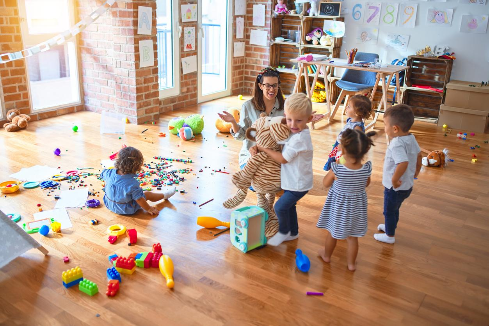

Taller de cuentos
Bienvenidos al emocionante mundo de la lectura en nuestro taller para niños. Aquí, exploraremos juntos las páginas llenas de aventuras, magia y personajes entrañables. A través de cuentos cautivadores y actividades interactivas, despertaremos la imaginación de los pequeños lectores, cultivando no solo su amor por los libros, sino también habilidades de comprensión, creatividad y empatía que los acompañarán en su viaje literario y más allá. ¡Prepárense para sumergirse en un universo de palabras y diversión!
Taller de psimoticidad
¡Bienvenidos al mundo del movimiento y la diversión en nuestro taller de psicomotricidad para niños! Aquí, los pequeños exploradores tendrán la oportunidad de jugar, aprender y crecer a través del movimiento. Con actividades dinámicas y estimulantes, fomentaremos el desarrollo de habilidades motoras, la coordinación y la autoconfianza, mientras exploramos el fascinante vínculo entre el cuerpo y la mente. ¡Prepárense para saltar, correr, trepar y descubrir un mundo lleno de posibilidades!
Taller de juegos
¡Bienvenidos al taller de juegos para niños, donde la diversión y la aventura nunca terminan! En este espacio creativo, los pequeños exploradores tendrán la oportunidad de sumergirse en un mundo de imaginación y camaradería mientras participan en una amplia variedad de juegos y actividades emocionantes. Desde juegos tradicionales hasta desafíos cooperativos, cada sesión está diseñada para estimular el desarrollo social, cognitivo y emocional de los niños mientras se divierten y crean recuerdos inolvidables. ¡Prepárense para reír, jugar y hacer nuevos amigos en nuestro emocionante taller de juegos!
Horarios de los talleres
| Horario | Lunes | Martes | Miercoles | Jueves | Viernes | Sabado |
|---|---|---|---|---|---|---|
| 09:00 - 10:30 | Taller Juegos | - | - | Taller de Psicomotricidad | - | - |
| 11:00 - 12:30 | Taller Juegos | - | - | Taller de Psicomotricidad | Taller de Psicomotricidad | Taller Juegos |
| 16:00 - 17:30 | - | Taller de lectura | - | Taller de Juegos | - | Taller Juegos |
| 18:00 - 19:30 | - | Taller de lectura | - | Taller de lectura | - | Taller Juegos |